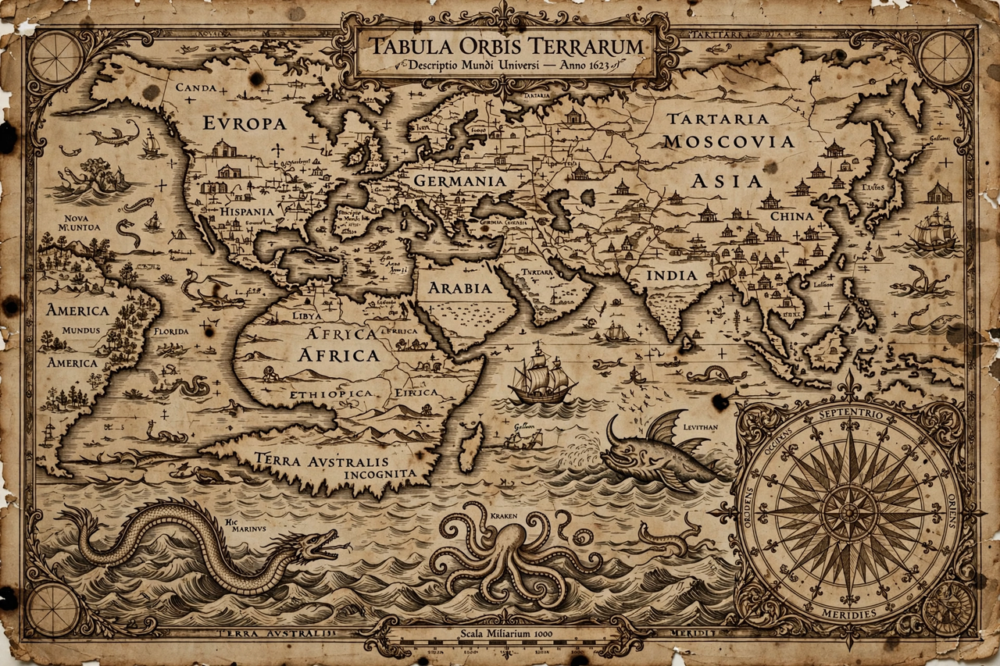

 |
Cartography (from Greek χάρτης chartēs, "papyrus, sheet of paper, map"; and γράφειν graphein, "write") is the study and practice of making and using maps. Combining science, aesthetics and technique, cartography builds on the premise that reality (or an imagined reality) can be modeled in ways that communicate spatial information effectively.
The fundamental issues of traditional cartography include deciding what features of reality to represent, how to represent terrain and other features on a flat medium, eliminating features irrelevant to the map's purpose (generalization), reducing complexity, and arranging the map's elements to convey its message. Modern cartography constitutes much of the theoretical foundation of geographic information systems (GIS) and geographic information science.
Maps are among humanity's oldest forms of graphic communication. The Babylonian Imago Mundi (c. 6th century BCE) is one of the oldest surviving world maps. Greek scholars advanced cartography greatly: Eratosthenes measured the Earth's circumference, and Ptolemy's Geographia (2nd century CE) codified a system of latitude and longitude and map projections that influenced mapmaking for over a millennium. In China, maps on silk from the Han dynasty survive, and Islamic geographers such as al-Idrisi produced sophisticated world maps in the medieval period.
The European Age of Discovery created demand for accurate charts. Portolan charts of the Mediterranean, the maps of Gerardus Mercator — whose 1569 projection preserved bearings for sailors — and Abraham Ortelius's Theatrum Orbis Terrarum (1570), considered the first modern atlas, transformed the field. The invention of printing made maps widely reproducible for the first time.
The 18th and 19th centuries saw systematic national surveys, such as the Ordnance Survey of Britain and the Cassini map of France, and the use of triangulation for precise measurement. In the 20th century, aerial photography, remote sensing, and eventually computers revolutionized map production. Today, digital mapping, satellite navigation (GPS), and web mapping services have made interactive cartography ubiquitous.
Because the Earth is approximately spherical, any flat map must distort area, shape, distance, or direction — properties that cannot all be preserved simultaneously. A map projection is a systematic transformation of latitudes and longitudes onto a plane. Famous projections include the Mercator projection (conformal, preserving angles and bearings), the Robinson and Winkel Tripel projections (compromise projections used for world maps), the equal-area Gall–Peters projection, and conic projections used for mid-latitude regions. The choice of projection depends on the map's purpose.
Effective map design balances legibility, visual hierarchy, and aesthetic quality. Cartographers select symbols, colors, typography, and a suitable scale, and include elements such as a title, legend, scale bar, north arrow, and source note. Color theory, generalization, and labeling remain central concerns, now applied equally to interactive and animated maps.
Geographic information systems store, analyze, and visualize spatial data in layered databases. Remote sensing from satellites and aircraft supplies imagery and elevation data, while the Global Positioning System provides precise positioning. Open data projects such as OpenStreetMap have democratized map creation through crowdsourcing.
This article is a recreation from memory in the style of Wikipedia.